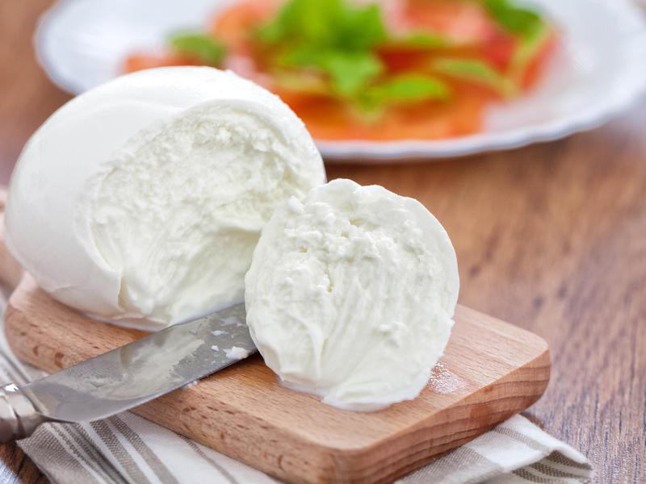
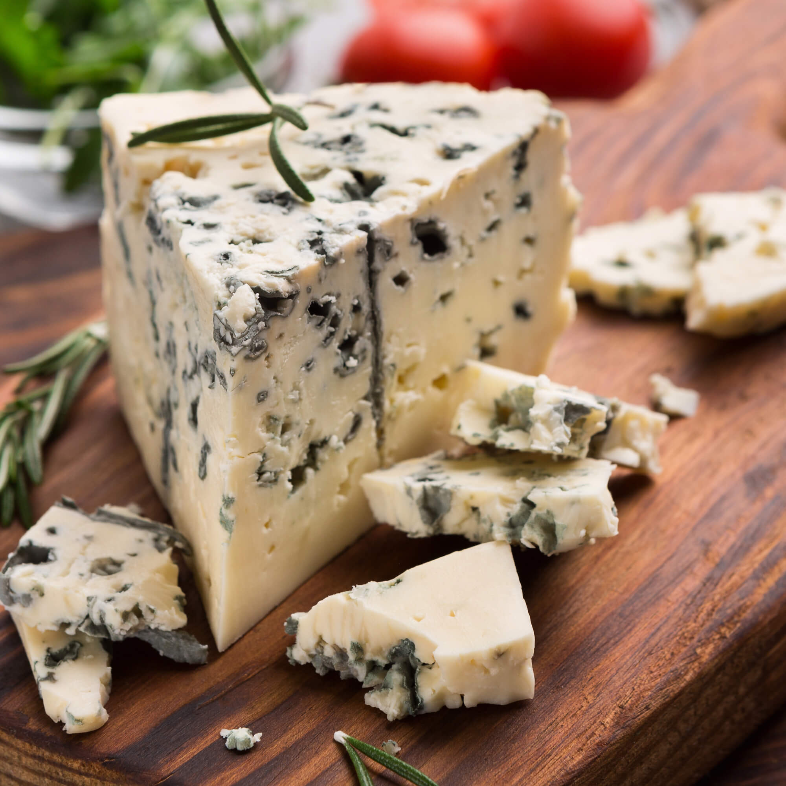
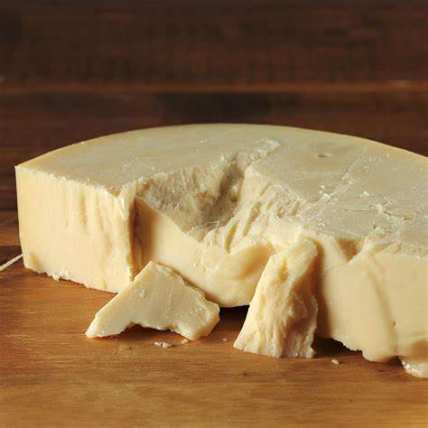
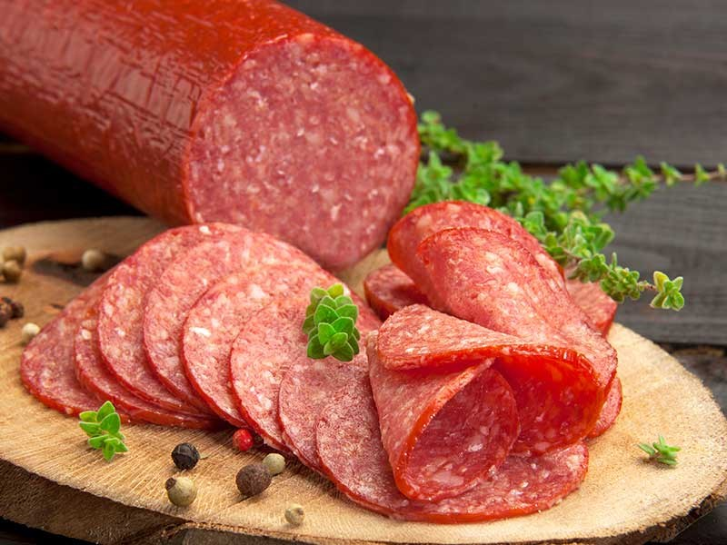

Mozzarella
El queso mozzarella es el queso italiano por excelencia. Está elaborado con leche de búfala o de vaca y se consume fresco o seco según con lo que se combine. El mozzarella se utiliza mucho en las pizzas, y es que su textura y la baja intensidad de se sabor combina muy bien con el resto de los ingredientes.
Queso Azul
La característica general de este grupo de quesos es que poseen todos un fuerte sabor tendente a ser picante y algo salado, el olor es generalmente fuerte. Suelen tener una textura suave que los convierte en ideales para untar, a veces se funden y se sirven en salsas que acompañan a carnes.
Provolone
El provolone es queso semi-duro con un sabor que varía mucho desde el Provolone Piccante, curado un mínimo de 4 meses (pudiendo llegar a un año) y caracterizado por tener un sabor muy fuerte, hasta el Provolone Dolce, con un sabor muy suave. En el Provolone Piccante, el peculiar sabor picante se debe al cuajo procedente de la cabra. El Dolce usa cuajo de ternero. Algunas variedades suelen ser ahumadas.
>Salame
El provolone es queso semi-duro con un sabor que varía mucho desde el Provolone Piccante, curado un mínimo de 4 meses (pudiendo llegar a un año) y caracterizado por tener un sabor muy fuerte, hasta el Provolone Dolce, con un sabor muy suave. En el Provolone Piccante, el peculiar sabor picante se debe al cuajo procedente de la cabra. El Dolce usa cuajo de ternero. Algunas variedades suelen ser ahumadas.
>Salame
El provolone es queso semi-duro con un sabor que varía mucho desde el Provolone Piccante, curado un mínimo de 4 meses (pudiendo llegar a un año) y caracterizado por tener un sabor muy fuerte, hasta el Provolone Dolce, con un sabor muy suave. En el Provolone Piccante, el peculiar sabor picante se debe al cuajo procedente de la cabra. El Dolce usa cuajo de ternero. Algunas variedades suelen ser ahumadas.
>Salame
El provolone es queso semi-duro con un sabor que varía mucho desde el Provolone Piccante, curado un mínimo de 4 meses (pudiendo llegar a un año) y caracterizado por tener un sabor muy fuerte, hasta el Provolone Dolce, con un sabor muy suave. En el Provolone Piccante, el peculiar sabor picante se debe al cuajo procedente de la cabra. El Dolce usa cuajo de ternero. Algunas variedades suelen ser ahumadas.
>